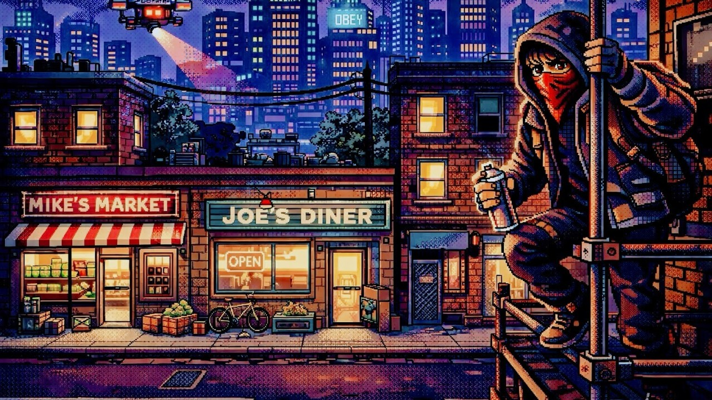

The City Sets the Tempo: How Space Shapes Play
Part of New & Improved™ — A deep dive into creating a culturally relevant video game.

The City as a Mechanic
In the first part of this series, I talked about intent, or why I wanted to start ideating on a game like New & Improved™. I also discussed why it mattered to me that the game engage with culture rather than sidestep it. Part 2 moved from intent to systems, exploring how progression mechanics like Street Cred and the Subversion Meter might carry that meaning forward. And, probably most importantly, I acknowledged that all of these ideas must be tested, broken, and refined through real play.
This week builds directly on both of those foundations. If systems define what changes as the player acts, level design determines how those changes are experienced. Space controls rhythm. It shapes difficulty. It decides when resistance feels tentative, or dangerous, or even when it demands more commitment.
Once I had thought up some of the core mechanics, I realized that the city of Capitalis couldn’t just be a backdrop for those systems. Its streets, rooftops, tunnels, and vertical gaps had to participate in the conversation. In New & Improved™, the city sets the tempo. As core as the mechanics are to gameplay, the player also needs to learn how to move through the game space and feel like the space is their own.
Difficulty, pacing, and tension don’t have to live solely in enemy counts or difficult puzzle play. They can also live in sidewalks and stairwells, alleys and rooftops, and in how far the player can see – or how quickly they can disappear.
Rhythm Is a Level Design Problem
It’s easy to think of rhythm as something controlled by mechanics: timers, cooldowns, patrol speeds, etc., can all potentially affect the pacing of a game, as well as the difficulty curves. But in New & Improved™, rhythm is also determined just as much by the structure of the city.
Wide horizontal spaces invite movement and observation. Tight vertical spaces create commitment. Mixed layouts force decisions. Do you stay low and visible? Do you climb and risk exposure?
And I don’t want any of this to be accidental. Each district needs to be designed to teach a different tempo of resistance. When to move, when to wait, and when to commit.
Design Note
Difficulty curves don’t just live in numbers. They live in space.
Midtown: Learning to Be Seen
Midtown is where the player learns the basic vocabulary of the city. Streets are wide. Rooftops are reachable but forgiving. Verticality exists, but rarely demands precision.
Good onboarding must always be presented in context and with meaning, achieved through hands-on experience and embedded in actual gameplay. Early resistance is tentative. Players need room to observe NPC behavior, patrol timing, and how visible actions affect the environment. Horizontal play dominates this district, allowing players to move, retreat, and experiment without overcommitting.
Acts like flyering and sticker placement feel low-risk, not because they are, but because the space allows for easy escape.
Midtown teaches players that visibility matters. It also teaches them they have options.
Design Note
Early levels should make players curious, not cautious.
Downtown: Surveillance and Exposure
Downtown Capitalis shifts the rhythm immediately. The city flattens out. Vertical options shrink. Sightlines stretch.
Here, horizontal play becomes dangerous. Hostile NPCs function like organic security cameras. The lack of vertical escape routes means that committing to an act feels heavier. The player remains visible for longer, and exits are fewer.
This district reinforces a key idea that not all public spaces are equally usable. Control isn’t just enforced by cops. It’s also embedded in the architecture.
The difficulty doesn’t spike because enemies are stronger. It spikes because space is less forgiving.
Deign Note
The City is a Mechanic. A hostile space doesn’t need more enemies. It just needs fewer exits.
The Subway: Timing as Movement
The subway (CART, or Capitalis Area Rapid Transit) introduces a different kind of challenge. Platforms and tunnels compress space. Trains interrupt sightlines. Movement becomes rhythmic rather than reactive.
Here, vertical and horizontal play blend, but neither dominates. The real mechanic is timing. Acts must be planned around arrivals and departures. Visibility flickers. Patrols feel unpredictable, even when they aren’t.
The subway reinforces a recurring theme that infrastructure shapes behavior. Resistance here isn’t about speed or height. It’s about patience.
Design Note
When space moves, players learn to wait.
The Industrial Sector: Vertical Opportunity
The Industrial Sector reintroduces verticality, but with a different tone. Half-built structures, cranes, and scaffolding create layered paths that reward exploration.
This is a space where vertical play feels empowering again. Height offers opportunity instead of danger. Unfinished walls become canvases. Visibility shifts from threat to tool.
The rhythm slows, but not because the game is easier. It slows because the city feels less hostile, more indifferent. That indifference creates openings.
Design Note
Not all freedom comes from safety. Sometimes it comes from neglect.
Teaching Through Space
One of the guiding ideas in this design is that levels should teach without instructing. Players learn how resistance works by feeling how space constrains or enables them.
As the game progresses, districts increasingly demand commitment. Escape becomes harder. Acts take longer. Routes require planning.
This isn’t just a difficulty curve. It’s more of a narrative one. Resistance starts small and flexible. Over time, it becomes visible, risky, and deliberate.
The city doesn’t just respond to the player. It shapes them.
Design Note
If players don’t change how they move, the space isn’t saying enough.
A Shift in Structure
Late in the game, the city changes again.
Without getting into specifics, there’s a moment where the familiar rules of navigation are disrupted. Space tightens. Movement becomes more deliberate. The player is asked to rely on skills they’ve been quietly developing the entire time: reading space, committing to motion, trusting timing, etc.
It’s very much intentionally structurally different.
This shift isn’t meant to surprise as much as it is to recontextualize. By this point, the player should understand that resistance looks different depending on where it happens, and that some spaces demand everything you’ve learned so far.
Design Note
A final space doesn’t have to feel bigger, but it should culminate everything learned so far.
Still on Paper (for Now)
As with the systems discussed last week, all of this needs to be tested. Spatial rhythm is notoriously difficult to predict from diagrams and prose.
Greyboxing, paper layouts, and early prototypes will reveal where tension reads clearly and where it collapses into frustration. What feels like deliberate pacing on paper might feel sluggish in motion. What feels daring might feel unfair.
Design Note
The goal isn’t perfection, but coherence.
Looking Ahead
With many systems defined and some spaces beginning to take shape, the next layer will be the interaction. Quests, side quests, mini-games, and moment-to-moment friction.
Next week, I’ll dig into how small actions like graffiti, hacking, flyering, and helping locals become meaningful through repetition and risk – and, of course, context and meaning – and how “minor” interactions can sometimes carry the most weight.
Because in New & Improved™, resistance isn’t just about where you go. It’s about what you choose to do once you’re there.
Page formatted by Written & Formatted. © Tim Samoff.